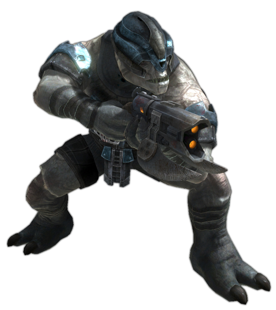
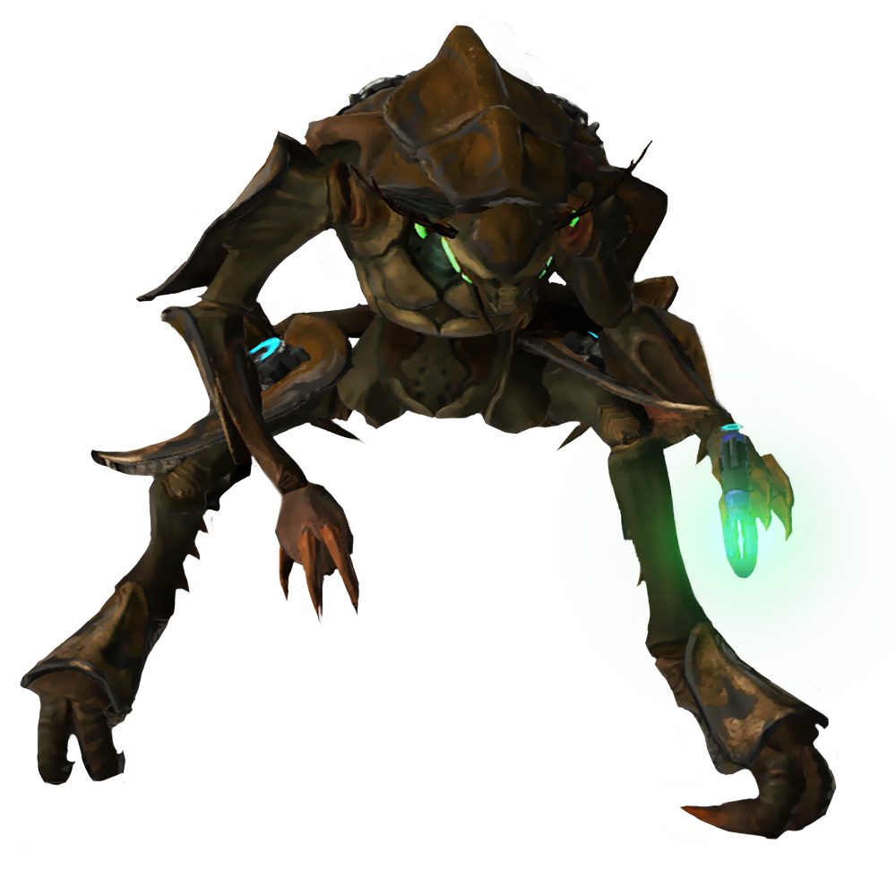
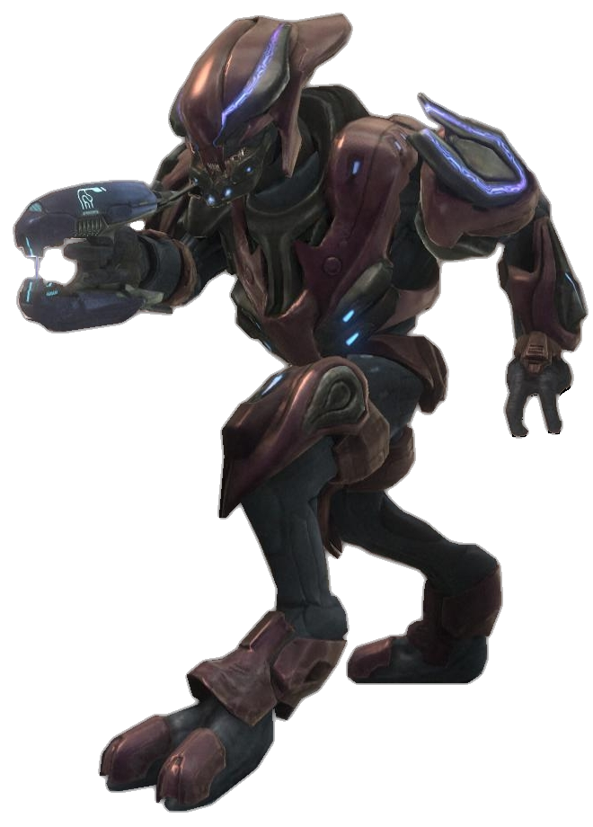
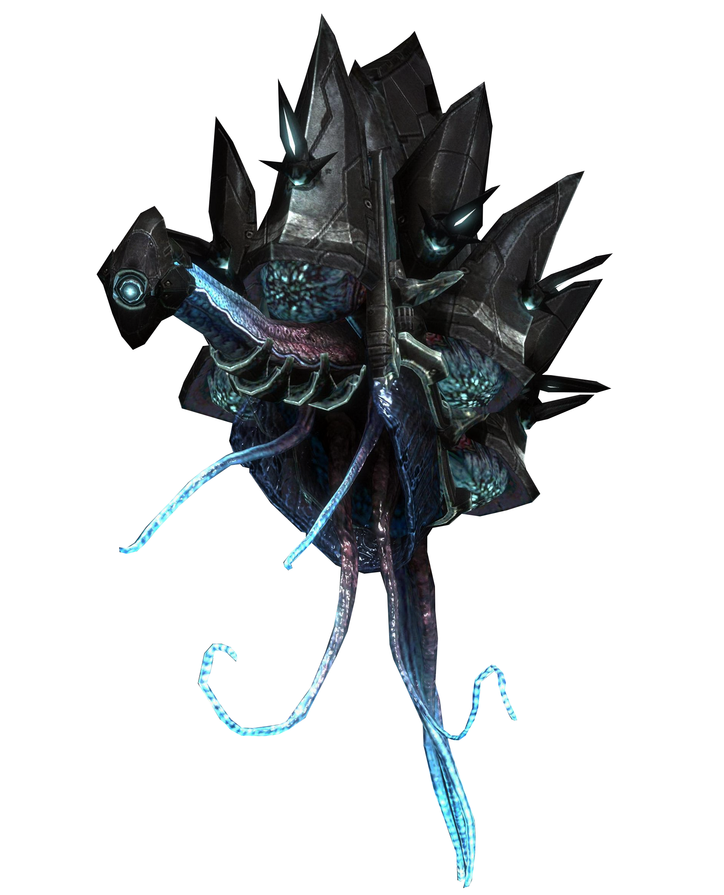
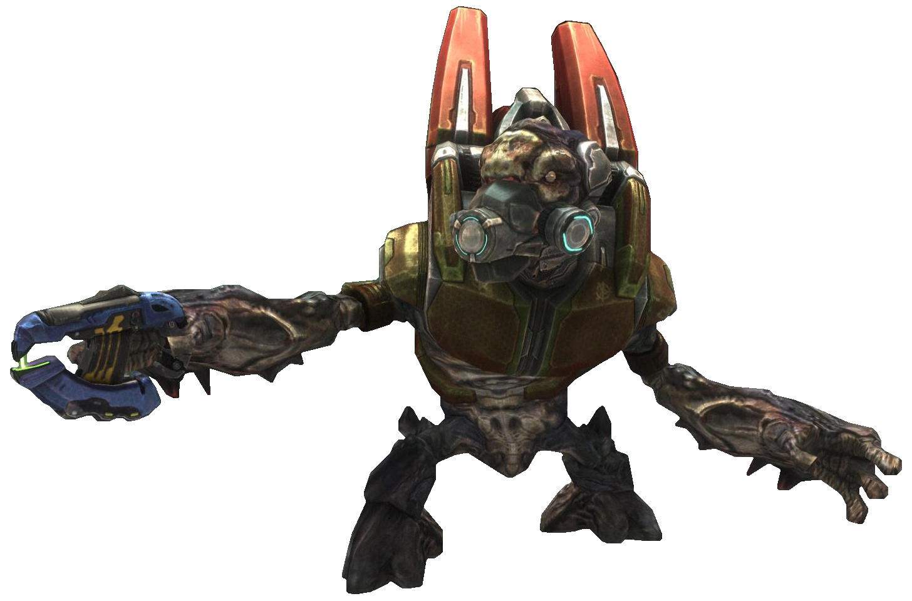
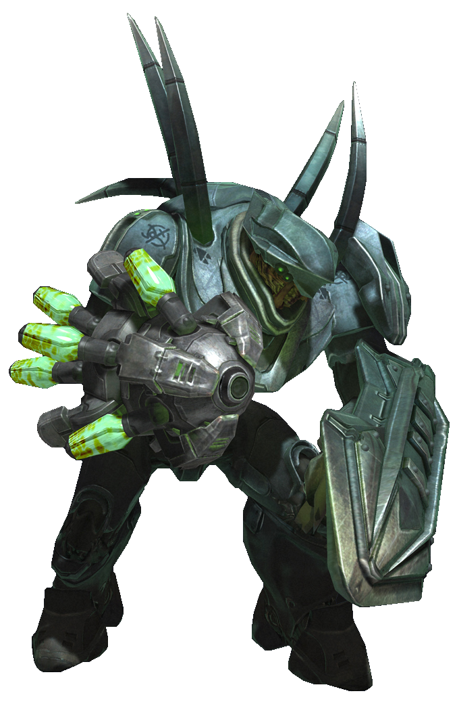
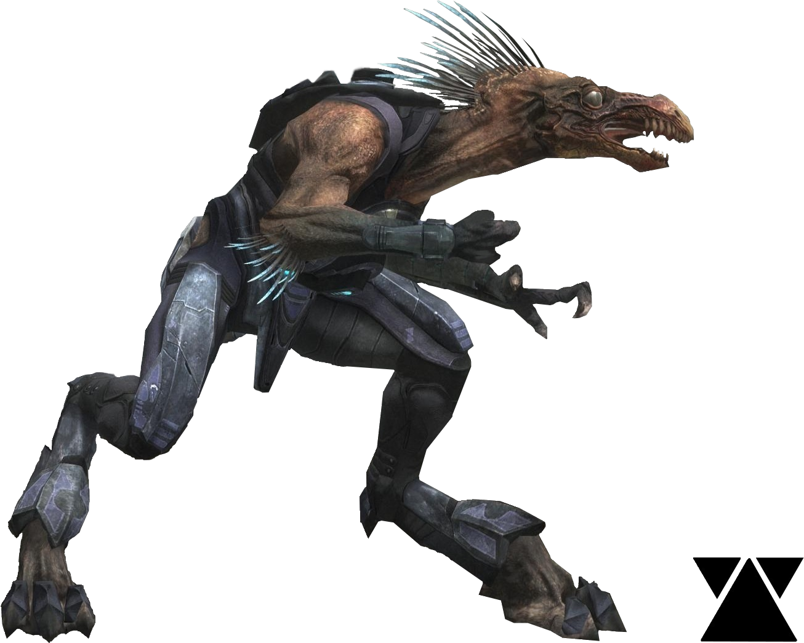
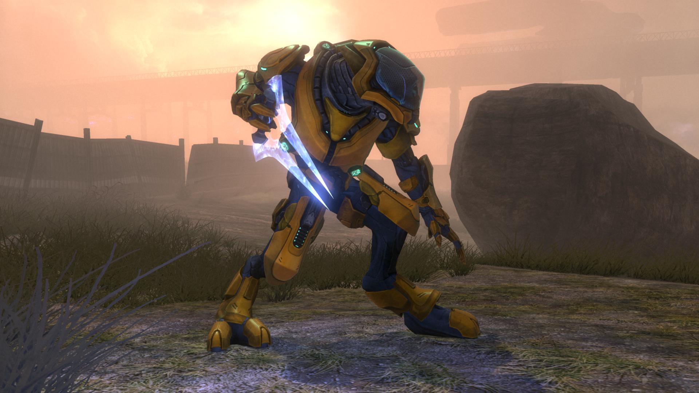

Some of the Covenant creatures in this site include: the hunter, jackel, skirmishers, elites, drones, engineers, grunts,
brutes, and the mighty scarab.
The brute

The brute is one of the most fierce aliens of the covenant, and they are also one of the strongest of the covenant. most times players try to just head shot a brute or run up to them and hit them in the head.
This is one idea that will usually get you killed in the game. one of the best strategies for them is to get a long ranged rifle and aim for the head.
If that doesn't work try a gravity hammer and send them flying.
The drone

The drone is one of the weakest creatures of the covenant and usually carries a plasma pistol, and is followed by at least six more drones. drones aren't that bad when it comes to combat, but when theres a whole swarm of them then you might have some trouble.
The best way to take care of drones is short controlled burst from any fast firing gun. Did you know that drones are born from a single queen just like ants are?
The elite

The Elite is one of the most feared creatures of the covenant, this is mostly because of their size that makes them twice as tall as humans.
Elites take there role in the covenants military very seriously, and they are usually in charge of the lower ranking creatures such as the grunt and the jackels. one of the best ways to deal with elites are plasma swords or heavy weapons, this should take care of any elite.
The engineer

Out of all the covenant the engineer is the strangest of them all.Engineers are descendants of the forerunners, and their main role in the covenant is to put shields on the weaker members of the covenant.
They also have some other purposes, like with their strong knowledge they know how to operate electronical equipment from the UNCS which is very helpful to the covenant.
If you are trying to get rid of one of these things all you have to do is shoot them once or twice and they should pop. Any weapon can be used for this!
The grunt

The grunts or the Unggoy as their scientific name, are the weakest of all the covenant. they are usually the main soldier of the covenants military, and are lead by the elites when on the battle field.
there isn't much advice for getting rid of these creatures, but because they're so weak any type of weapon will do just fine in taking care of them.
The hunter

The hunters, these creatures are one of my personal favorites. hunters are these huge bulking beast with a huge shield and in the other hand a big plasma cannon.
they are one of the more fun enemies to fight since they are so hard to take down unlike some of the other covenant members.
But if your feeling lucky and you want to take down one of these beast, your best option is to stay far away from its melee attacks.
the best weapon choice for these hunters would have to be a rocket launcher or any explosive weapon.
The jackel

The jackel is one of the smartest of the covenant and with its plasma shield it make a pretty tough enemies to take down.
jackels also travel together in groups of ten or more and usually are accompanied by an elite. jackels have multiple ranks unlike the other members of the covenant. They could be a sniper, ground infantry, or just a regular jackel with a shield.
To take these down you need to aim for the arm that is not behind the shield, this will expose the jackel enough so you can get a better shot to the chest.
mostly plasma weapons work best on them.
The skirmisher

The skirmisher is one of the smartest creatures of the covenant, this is mostly because while most enemies charge their foe, the skirmisher tries to flank them.
skirmishers think more tactical than other covenant and almost look the same as a jackel, except for the large feathers on the head and arms of the skirmisher.
they also tend to move around so fast you can bearly hit them.
Advice for killing a skirmisher would have to be running it over with a vehicle or just hit it with a bullet when it stops moving.
The Scarab

The scarab, one of the biggest members of the covenant.
This big walking piece of metal is made of the same thing hunters are made of small worms "Lecagolo". these small worms are pumped into this mechanical beast, where it will become a feared foe on the battle field.
Scarabs are armed with big blaster cannons on the top of their bodies, and a huge plasma gun at the front of their mouths.
The best way to take these huge beast down would be to hit their legs with explosive weapons. which will then disable it where you can now climb on top to find the generator.
when shooting the generator it will kill the scarab, but you will have less than 30 seconds to get away before it explodes.
The Bob elite

This is the bob elite, he was given the name bob over the time of players in halo encountering him.
bob is a very special type of elite he only appears in eight different spots throughout the halo reach game.
Hes special because if you kill him in time you will get a rare achievement that only 12% of halo players get.
This is know as the "if it bleeds" achievement, and you can only get this if you kill bob.
To kill him you can snipe him or rush him with any weapon, but rushing isn't the best idea because as soon as he sees you he usually disappears.